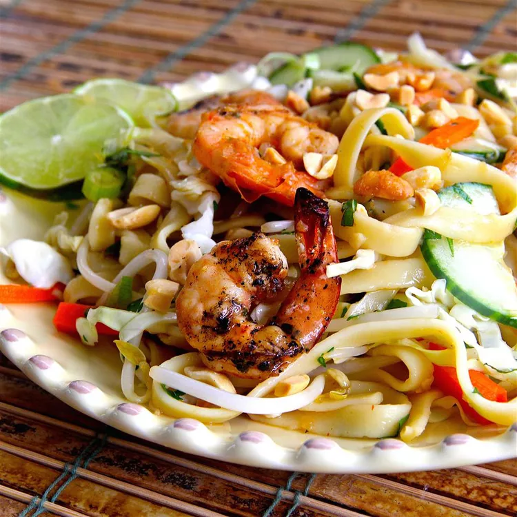

Saigon Noodle Salad

This Vietnamese-style noodle salad is my 'too hot to cook' staple.
It is bursting with flavor and makes great use of leftover grilled meat or shrimp.
Ingredients
- ¼ cup water, or more to taste
- 3 tablespoons lime juice
- 3 tablespoons fish sauce
- 3 tablespoons brown sugar, or more to taste
- 1 clove garlic, minced
- 1 teaspoon minced fresh ginger root
- ½ teaspoon Sriracha chile sauce